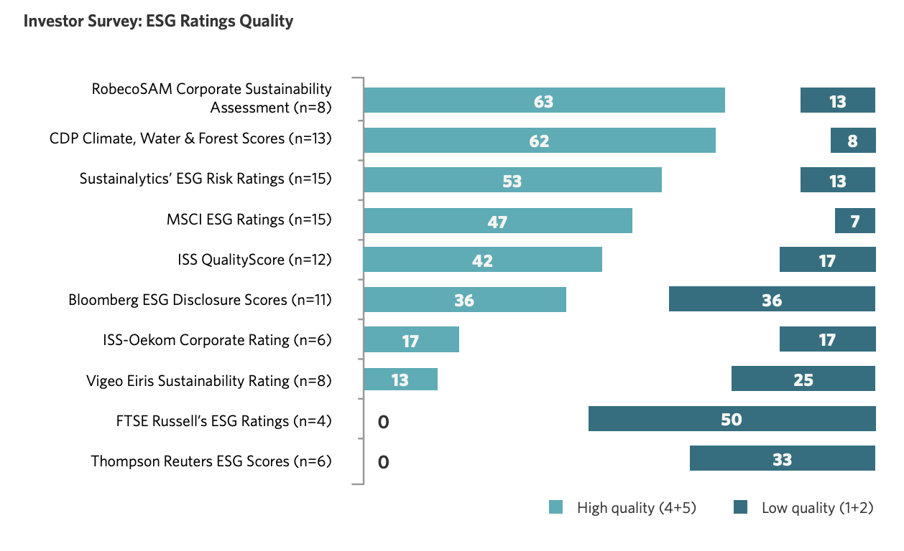
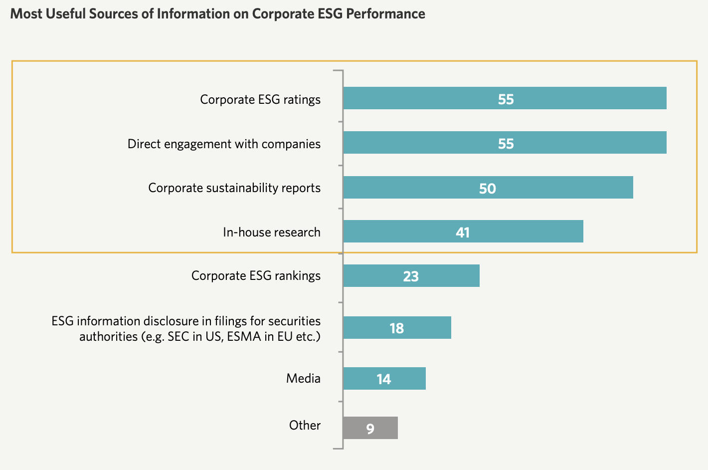

About ESG, an article makes it clear
2022-10-26
International companies such as Microsoft, Nike, NVIDIA, Starbucks, Mercedes have all announced that they will become "net zero companies" and set carbon neutral goals. Even Nestlé's KitKat has announced their chocolates are gonna be "carbon-neutral chocolates". Why is ESG so hot in the corporate world? Should you, as a business manager, include ESG in your strategy map? In this article, let's talk about the mystery of ESG certification.
What is ESG certification?
ESG was proposed by the United Nations in 2005, emphasizing that enterprises should incorporate the social responsibility of the environment, society and governance into their business policies, which will have a positive impact on society and the financial market.
ESG can be said to be the specific version of "CSR" in the past. In addition to emphasizing that enterprises should take social responsibility, it also further divided the aspects of social responsibility in detail. In 2015, the United Nations further announced that "2030 Sustainable Development Goals" Responsibilities are further subdivided into 17 principles.
Because of its specificity and subdivision, ESG has transcended the essence of CSR public relations slogans in the past and evolved into a standard used by investment institutions to evaluate corporate fitness. ESG indicators can present physical information that cannot be seen in financial statements, and become a non-accounting qualitative indicator.
This indicator has also been tested over time. During the 2008 financial tsunami, it was found for the first time in the world that companies with good ESG ratings suffered less damage, and the Chinese University of Hong Kong Business SchoolResearch shows that under the impact of the 2020 epidemic, Chinese stocks with high ESG scores fell less, and their returns were about 10% higher than low ESG portfolios.
What are the credible ESG organizations in the world? How is the credibility?
The most controversial aspect of ESG ratings is that the scores produced by each rating agency can vary greatly. The main reason for the large difference in scores is that different organizations do not necessarily focus on the same evaluation points. For example, the International Carbon Disclosure Project CDP only looks at the “environment” category scores, while MSCI broadly covers the three aspects of environment, society, and governance.
According to the SustainAbility report Rate the Rater 2020, The top two leading evaluation agencies are the International Carbon Disclosure Project (Carbon Disclosure Project) and RobecoSAM, a subsidiary of Dow Jones DJSI. The former is more valued by academic institutions and NGOs, while the latter pays more attention to the company's operational performance. People in the industry pay attention.
Following up the rating agencies are Sustainalytics, MSCI, ISS, Bloomberg ESG Disclosure Scores, and others.
（source：Rate the Rater 2020）
How do investors view ESG assessments?
- In the fourth quarter of 2020, ESG officially marked a watershed in its development. Funds flowing into ESG investment hit a new high of US$152 billion, the asset management scale also reached US$1.6 trillion, and as many as 196 ESG products were launched.
- And investors in Asia Pacific are realizing that ESG is not just a feel-good investment strategy. It does lead to outperforming non-ESG indices. This is the case in 2021, and the same is expected in 2022.
- In 2020, the proportion of institutional investors who believe that ESG has excess returns has exceeded 60% (62%), and the proportion of institutional investors who implement ESG in 2021 has reached 72%.
It can be seen that in recent years, investors have gradually incorporated ESG indicators into their measurement standards, and ESG has gradually escaped the doubts of "green bubbles"
However, the issue of score confusion between different rating agencies can affect investor confidence. Research shows that investment institutions’ holdings are The ratio came to 23%, and 18% when inconsistent.
The higher the rating confusion, the higher the market premium and the lower the stock market participation and economic benefits of ESG-sensitive investors.
Investment institutions familiar with the ESG market also have their own ways to deal with the problem of confusing scores.
Investing in 17 companies based on Rate the Rater 2020 For institutional surveys, investors usually comprehensively refer to multiple evaluation materials, and have different interpretation methods for different reports. For example, investors in CDP’s evaluation report mostly look at its “data” rather than the final score; while reports such as MSCI and Sustainialytics cover a wide range of evaluations, investment institutions often use this score as a comprehensive indicator for reference.
In addition to simply looking at the ESG rating scores, investment institutions will also directly request the company to provide relevant information, such as sustainability reports, internal information disclosure, etc.
It can be seen that the ESG evaluation standard is not a "fight to the death" for enterprises to pursue a sustainable mark. Efforts are made to focus on the enterprise's own sustainable strength, active investigation, and a clear sustainability report can also enhance the enterprise's ESG impression and strength.

What are the benefits of obtaining an ESG certificate?
For investment institutions, the integration of financial and ESG evaluation methods can effectively optimize investment performance and reduce investment risks
For entrepreneurs, effectively improving the ESG rating can also indirectly improve the company's advantages.
This corporate advantage is reflected in both external and internal aspects.
From an external point of view, the corporate advantages brought by ESG are higher investment interest, good public relations reputation, lower additional costs after the carbon fee policy is implemented, and carbon emission reduction results can be sold as carbon credits, etc.
(Extended reading: Carbon pricing, carbon trading, carbon neutrality, net zero, carbon tariffs, carbon capture, carbon budgets... 16 carbon terms you must know!>)
But more importantly, it's the corporate advantage that is displayed internally. The reason why ESG indicators are valued is that institutions with high ratings have higher corporate resilience and are more tolerant than companies with low ESG scores, and can withstand unpredictable black swan events in the free market.
Why can you improve corporate resilience? This is because the improvement of ESG strength actually represents the overall improvement of the company's physique.
For example, in order to achieve the goal of reducing carbon emissions by 18% by 2025, Walmart, an American company, found after detailed inspection that the carbon footprint of its suppliers accounted for 90% of the total carbon emissions, so it must start from here.
What I didn't expect at the time was that in order to reduce carbon emissions and strengthen the relationship with suppliers, it made an advance deployment for the follow-up accurate information investigation of the value chain required for epidemic prevention, so it suffered less impact during the epidemic. .
One copy from Harvard Business School and State StreetJoint report points out that companies’ commitment to engaging stakeholders is signaling to investors “corporate resilience”, thereby reducing their exposure to corporate stock value in the event of a market crash. Negative impact.
ESG is spending money on PR?
As more and more companies invest in ESG transformation, people gradually realize that committing to business sustainability is not the traditional imagination of "losing money and doing good deeds and accumulating good fortune", but an investment that can bring stable returns in the long run.
As BlackRock Research Consultants think, we are In the paradigm shift stage of the concept of sustainability, business operators should look not at how much the current generation cares about the concept of sustainability, but the next generation's view on sustainability; the cost and effort invested in sustainability now, All will be rewarded because future generations care more about sustainability issues.
Scope 3 Inventory and Reduction Challenge
A major difficulty in obtaining ESG is to conduct an inventory of the "Scope 3" of the company's own products.
In terms of inventory, "Scope 1" refers to the direct carbon emissions and greenhouse gas emissions from the production process of products, such as carbon emissions from factory processes, livestock, machinery and equipment, and employee commuting. Generally, you can check the operation status of the equipment in the factory.
"Scope 2" refers to the carbon emissions generated by the use of electricity by enterprises. General collection of electricity bills can be checked.
The most difficult to check is "Scope 3", which is the upstream of the product production chain, such as transportation and distribution, raw material production, downstream product distribution, carbon emissions during use, waste disposal, etc. Because the scope covers the entire value chain, it is extremely difficult to investigate. According to MSCI statistics, only 18% of international companies provide information disclosure for the third Scope.
However, Scope 3 is the largest component of the corporate carbon footprint. According to the CDP2021 report, the average carbon emission of Scope 3 is 11.4 times that of the sum of Scope 1 and Scope 2.
In other words, if the upstream and downstream carbon footprints are included, the carbon emissions generated by the upstream and downstream value chains of products may account for more than 90%.
And because the upstream and downstream components of different industries are very different, it is difficult for us to have a standard solution, and we can only calculate it case by case.
How does technology help?
Combogic Tech. Combogic Tech's specialty is to use big data to crawl complex information, we love this kind of intractable problems <3
Although the composition of Scope 3 varies greatly with the enterprise category, one of the cross-category elements is "transportation". Regardless of personnel or products, any enterprise will need transportation.
From the perspective of data, about 15% of global Scope 3 carbon emissions come from transportation vehicles. If calculated by the aforementioned 11.4 times, the reduction efforts for the category of transportation can produce a magnification effect of 1.71 times compared with the sum of the first and second categories, which is not lost as a good leverage point.
By combining unsupervised AI technology and GIS layer information, we can analyze a large amount of trajectory data, not only to capture higher or lower carbon emission deviation paths in the trajectory, but also to decouple carbon emission factors and vehicle trends Behavioral Correlation.
With data, we can see more thoroughly and clearly, so that we can formulate a truly effective carbon reduction plan.
In pursuit of sustainability, in addition to turning off the lights, you can do more :)